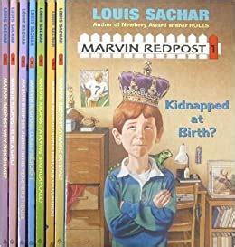

Louis Sachar (/ˈsækər/ SAK-ər;[1] born March 20, 1954) is an American young-adult mystery-comedy author. He is best known for the Wayside School series and the novel Holes.After graduating from Tustin high school, Sachar attended Antioch College for a semester before transferring to University of California, Berkeley, during which time he began helping at an elementary school in return for 3 college credits.
The book holes was based on a boy named stanley who got falsely accused for stealing a pair of shoes, later he gets put on trial and gets sent to camp green lake. He has to dig holes. He meets some new friends and starts teaching one of the boys how to read and write, they tell the story of his great-great-pig-stealing-dirty-rotten-grandfather who got cursed and now he is the reason of all the bad things that are happening in stanleys life.
Holes won the 1998 U.S. National Book Award for Young People's Literature and the 1999 Newbery Medal for the year's "most distinguished contribution to American literature for children". In 2013, it was ranked sixth among all children's novels in a survey published by School Library Journal.
Wayside School is a series of short story cycle children's books written by Louis Sachar. Titles in the series include Sideways Stories from Wayside School (1978), Wayside School is Falling Down (1989), Wayside School Gets A Little Stranger (1995), and Wayside School Beneath the Cloud of Doom (2020).[1]. The books tell of a school where the contractor misread the blueprints and mistakenly built it sideways. As such the school was constructed as a 30-story skyscraper. The 19th floor was omitted from the plans. Each chapter in the books corresponds with a "floor" of the school. Sachar released two spinoff books of mathematics and puzzles interspersed with stories: Sideways Arithmetic from Wayside School (1989) and More Sideways Arithmetic from Wayside School (1994). Wayside: The Movie is a television special loosely based on the books that aired in 2005, and was followed-up by the Wayside animated series that originally ran from 2007 to 2008.
The Marvin Redpost Series, is a series of eight children's books by the author Louis Sachar. The books first came out in 1992, when Sachar's daughter was four years old, which is why Marvin Redpost has a four-year-old sister. The books were re-released in early 2007 with a new cover and different illustrations.